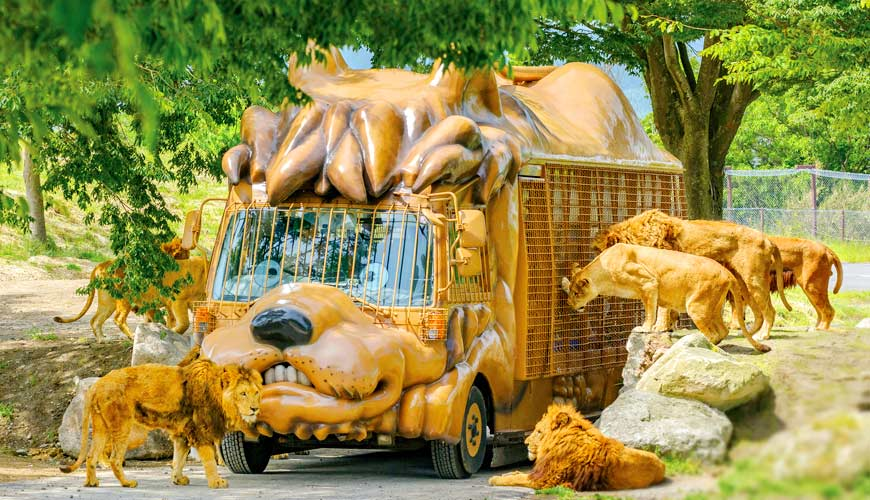

九州六日遊
夏日回憶之旅・行程總覽

Day 1
7/24 (四)福岡・博多 (🚗 約1小時)
14:00 - 抵達福岡機場，租車
15:15 - 櫛田神社 & 川端商店街
16:30 - LaLaport 福岡購物 & 晚餐


Day 3
7/26 (六)由布院 → 阿蘇 (🚗 約2小時)
09:00 - 九州自然動物園
12:00 - 九州夢大吊橋
15:00 - 阿蘇神社 & 門前町商店街
景點與美食

Day 4
7/27 (日)阿蘇 → 高千穗 → 熊本 (🚗 約2.5小時)
09:20 - 大觀峰、草千里
11:30 - 高千穗峽
16:00 - 熊本下通商店街
景點與美食
Day 5
7/28 (一)熊本 → 福岡・天神 (🚗 約1.5小時)
09:00 - 熊本城 & 城彩苑
15:00 - 天神地下街 & Mina 天神
景點與美食
Day 6
7/29 (二)福岡・天神 → 福岡機場 (🚗 約30分鐘)
09:30 - 大濠公園 & 草間彌生南瓜
11:00 - 還車
11:30 - 福岡機場午餐
住宿
無